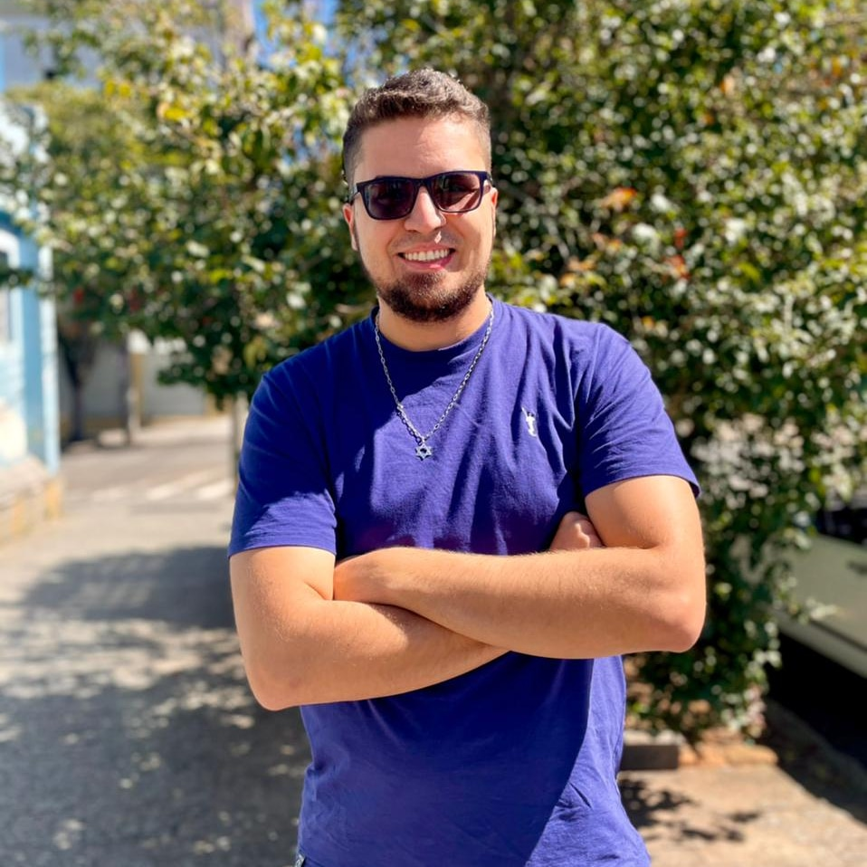
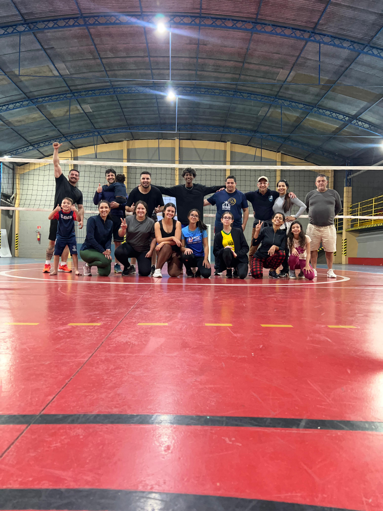

Minha História
Meu nome é Herick, nasci em 22/05/1992 e sempre morei na mesma cidade: Poços de Caldas - MG. Sou casado com a Raíssa desde 2019. Considero-me uma pessoa que gosta de desafios e está sempre em busca de conhecimento em diversas áreas da vida.
Hobbies e Interesses
Gosto de aproveitar o tempo livre com atividades que me trazem satisfação e crescimento. Entre meus hobbies, destaco:
- Ler livros variados
- Praticar esportes:
- Futebol
- Vôlei
- Corrida
- Passar tempo com a família, amigos e na igreja
Algumas Imagens
Aqui em breve adicionarei algumas fotos pessoais para ilustrar um pouco mais minha história e interesses.
 